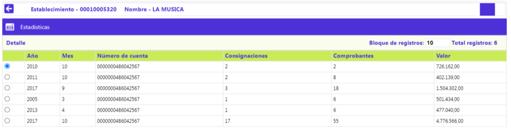
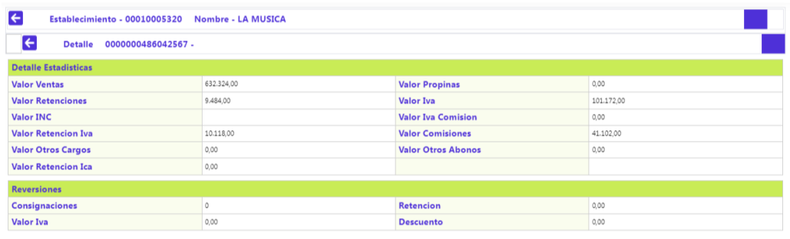

Información de establecimientos - Estadísticas
En este formulario invocado desde Información de establecimientos, Permite visualizar los depósitos realizados por cuenta, de manera cronológica (mensual), incluso si existe más de un movimiento en una misma fecha. Cada movimiento es desagregado en todos sus conceptos. Si la entidad desea disponer de ésta información debe matricular y ejecutar el proceso que genera dichas estadísticas.

Descripción de campos
|
Establecimiento |
Corresponde al código de identificación del establecimiento. |
|---|---|
|
Nombre |
Describe el nombre del establecimiento asociado al código. |
|
Año |
Muestra el año para el cual se despliegan los datos estadísticos. |
|
Mes |
Muestra el mes para el cual se despliegan los datos estadísticos. |
|
Número de cuenta |
Despliega el número de la cuenta de depósito en la que se efectuaron los depósitos que permiten producir las estadísticas aquí mostradas. |
|
Consignaciones |
Número de consignaciones realizadas durante dicho mes y año. |
|
Comprobantes |
Número de comprobantes consignados durante dicho mes y año. |
|
Valor |
Acumulado del valor total de las consignaciones realizadas durante dicho mes y año. |
Detalle estadísticas: Desglose del movimiento realizado durante el mes y año seleccionado en el otro bloque contenido dentro de este mismo tab.

|
Valor ventas |
Monto acumulado (por mes/año) equivalente al valor del consumo o utilización en cada consignación, (excluyendo las propinas). |
|---|---|
|
Valor propinas |
Monto acumulado (por mes/año) resultado de la sumatoria de los valores por concepto de propina, tomado de cada comprobante. |
|
Valor Retenciones |
Monto acumulado resultado de la liquidación de la retención en la fuente aplicada a las consignaciones del mes y año referenciados. |
|
Valor IVA |
Monto acumulado (por mes/año) resultado de la sumatoria de los valores por concepto del IVA, si aplica, tomado de cada comprobante. |
|
Valor INC |
Despliega, si aplica, el monto cobrado al cliente y depositado al establecimiento. El sistema evalúa los parámetros correspondientes. |
|
Valor IVA Comisión |
Despliega, si aplica, el monto del IVA cobrado sobre las comisiones aplicadas a la consignación. |
|
Valor Retención IVA |
Monto acumulado de la porción del IVA retenido al establecimiento durante el mes y año referenciados. |
|
Valor comisiones |
Monto acumulado resultado de la liquidación de la comisión (descuento) aplicada a las consignaciones del mes y año referenciados. |
|
Valor otros cargos |
Monto o resultado de la sumatoria de los valores que por concepto de otros cargos afecta a la cuenta de depósitos. |
|
Valor otros abonos |
Monto o resultado de la sumatoria de los valores que por concepto de otros abonos afecta a la cuenta de depósitos. |
|
Valor Retención Ica |
Monto acumulado de la porción del impuesto de industria y comercio ICA retenido al establecimiento durante el mes y año referenciados. |
Reversiones: Conjunto de campos que posibilita el conocer el movimiento de las deducciones o restituciones hechas a los comercios por efecto de la reversión de descuentos o abonos efectuados durante el mes y año seleccionado.
|
Consignaciones |
Monto acumulado de consignaciones reversadas durante el mes y año seleccionado. |
|---|---|
|
Retención |
Monto acumulado de las restituciones de las retenciones efectuadas sobre los depósitos reversados efectuados durante el mes y año seleccionado. |
|
Valor IVA |
Monto acumulado de las restituciones de las retenciones de Iva efectuadas sobre los depósitos aplicados, que debieron ser reversados, durante el mes y año seleccionado |
|
Descuento |
Monto acumulado de las restituciones de los descuentos efectuados sobre los depósitos hechos durante el mes y año seleccionado, que debieron ser reversados. |